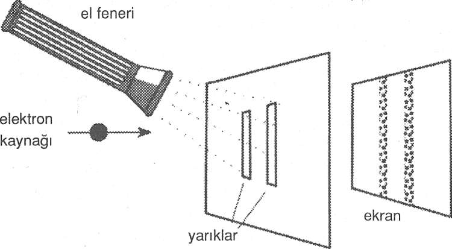
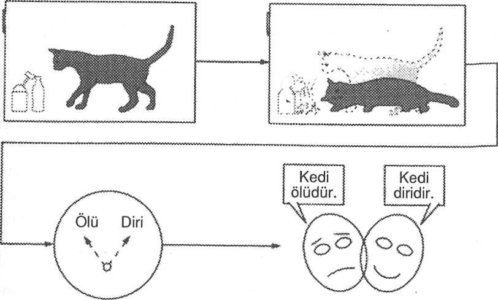

flüoresan ekran
flüoresan ekran2. Bölüm –iDEALiZM ve KUANTUM PARADOKSLARININ ÇÖZÜMÜ
Düşünce alışkanlıkları zor ölür. Kuantum mekaniği, temel fizik teorisi olarak klasik mekaniğin yerini almış olmasına karşın, eski dünya görüşüyle koşullanmış olan birçok fizikçi, kuantum mekaniğinin idealist imalarını düşünmeyi hala zor bulmaktadırlar. Kuantum mekaniğinin doğurduğu utanç verici metafizik soruları sormayı istemiyorlar. Böylesi sorunların, göz ardı edilirse, ortadan kalkacağını sanıyorlar. Bir keresinde, kuantum mekaniğindeki paradokslarla ilgili bir tartışmanın başlangıcında, Nobel ödüllü Richard Feynman bu tutumu o kendine has taklit edilemez şaka yollu sözleriyle alaya almıştı: "Şşşt, şşşt. Kapıları kapatın."
Birazdan okuyacağınız beş bölümde kapıları açacak ve kuantum fiziğinin paradokslarını utanmadan sıkılmadan teşhir edeceğiz. Amacımız, kuantum paradokslarının, idealist monizmin ışığında incelendiğinde, hiç de şok edici veya paradoksal olmadığını göstermek. Aşkın, birleştirici bir şuurun kuantum dalgalarını çökertmesine dayanan idealist bir metafiziğe sıkı sıkıya tutunmak,kuantum fiziğinin tüm paradokslarını keyfi olmayan bir tarzda çözmektedir. İdealist monizmin çerçevesi içinde bilim yapmanın tamamen mümkün olacağını göreceğiz. Sonuç, ruh ve maddeyi bütünleştiren idealist bir bilimdir.
Şuurun kuantum dalgasını çökerttiği fikri, 1930'larda matematikçi John von Neumann tarafından önerilmişti. Bu fikri ciddiye almamız niye bu kadar uzun sürdü ? Belki de bu meselede kendi kafamın nasıl netleştiğini kısaca anlatmam yardımcı olacaktır.
Neumann'ın önermesinin bana yaşattığı zorluklardan biri, deneysel verilerle ilgiliydi. Biz baktığımızda, her zaman şuurlu gö- rünmekteyizdir. O zaman şuurun kuantum dalgalarını çökertmesi meselesi, tamamen akademik görünmektedir. Bir kişinin baktığı ama şuurlu olmadığı bir durum bulabilir miydik? Bunun kıdağa ne kadar paradoksal geldiğine dikkat edin.
1983'te Oregon Üniversitesinin psikoloji bölümünde düzenlenen şuur üstüne on haftalık bir seminere davet edilmiştim. Bu saygın psikologların kuantum fikirleri üstüne yaptığım tam altı saat süren konuşmalarımı sabırla dinlemeleri beni pek memnun etmişti. Ancak gerçek ödül, psikoloji mezunlarından biri olan Michael Pos- ner'in grubunun Tony Marcel adlı birinin topladığı verileri rapor olarak sunmasıyla geldi. Verilerden bazıları "şuursuz görme" hakkındaydı; yani tam da aradığım şey.
Kalbim gümbür gümbür atarak verileri dinledim ve verilerin, şuurun ancak bizler şuurlu gördüğümüzde beyin-zihnin kuantum halini çökertmesi durumuyla tamamen uyumlu olduğunu (bkz. "Seçiyorum, Öyleyse Varım" başlıklı bölüm) fark ettiğimde gevşedim. Şuursuz görmede, hiçbir çökme yoktu ve bu durum hayli deneysel fark yaratıyordu. Kısa sürede şuurlu ve şuursuz algılamanın yarattığı ayrımla ilgili küçük paradoksu da nasıl çözebileceğimi fark ettim. Mesele, şuur ve farkındalık arasında ayrım yapmaktı.
AYNI ANDA IKI YERDE BİRDEN OLAN NESNELER ve SEBEPLERİNDEN ÖNCE GELEN SONUÇLAR
Materyalist realizmin temel önermesi artık tutmuyor. Klasik determinizm, yerellik, güçlü nesnellik ve epifenomenalizm yerine kuantum mekaniği olasılık ve belirsizliği, dalga-parçacık tamamlayıcılığını, yerel olmayışı ve de özneler ve nesneler karışımını önermektedir.
Kuantum mekaniğinin, belirsizliği ve tamamlayıcılığı doğuran olasılık yorumu hakkında Einstein, Tanrı zar atmaz, demekteydi. Ne demek istediğini anlamak için gelin bir radyoaktif örnekle bir deney yaptığınızı hayal edin; şüphesiz bu örnek bozunmanın olasılıklı kuantum kanunlarına boyun eğmektedir. İşiniz on radyoaktif olay için ne kadar zaman geçtiğini, yani Gayger sayacınızdan duyacağınız on tıkırtıyı ölçmektir. Varsayın ki on radyoaktif bozunma durumunun oluşması için ortalama yarım saat geçmektedir. Bu ortalamanın ardında olasılıklar saklanmaktadır. Bazı deneyler otuz iki dakika sürmektedir, diğerleri yirmi beş dakika vs. İşleri daha da karıştırmak üzere, diyelim ki bekletilmekten nefret eden nişanlınızla buluşmak için otobüsü kaçırmamanız şart. Ve tahmin edin ne olur? Son deneyiniz kırk dakika sürer çünkü rastgele tek bir atom, diğer ortalama olanların yaptığı gibi bozunmayacaktır. Böylece otobüsü kaçırırsınız, nişanlınız yüzüğü atar ve hayatınız mahvolur.1 Tamam, bu örnek biraz aptalca ama Tanrı'nın zar attığı bir dünyada olan şeylerin doğal bir örneğidir ve anlatmak istediğimizi anlatmaktadır. Olasılıklı olaylar ancak ortalamaya bağımlı olabilirler.
Atomik olayların rastgeleliği -kaderin zarı andırması- bir determinist için nefret uyandıran, iğrenç bir şeydir. Determinist, olasılığı bizim klasik fizikte ve gündelik yaşamda düşündüğümüz tarzda düşünmektedir: Bu, büyük nesnelerin oluşturduğu büyük bir kümenin bir karakteristiğidir. Bu küme öylesine büyük ve karmaşıktır ki, onları tahmin etmek ilkesel olarak mümkün olmasına rağmen pratik açıdan tahmin edemeyiz. Determinist için olasılık sadece düşünce bakımından bir rahatlıktır; tekil nesnelerin hareketlerini yöneten fizik kanunları tamamen belirlenmiştir ve dolayısıyla tamamen tahmin edilebilirdirler. Kuantum mekaniği evreninin de bu tarzda olduğu, Einstein’ın inancıydı: Kuantum belirsizliklerinin ardında gizli değişkenler vardı. Kuantum mekaniğinin olasılıkları sadece bir uygunluk meselesiydi. Eğer durum böyle olsaydı, kuantum mekaniği bir kümeler teorisi olurdu. Aslında, eğer olasılık dalgası tanımını tek bir kuantum nesnesine uygulamazsak, dalga-parçacık tamamlayıcılığı ve kuantum nesnelerinin gözlem varsayımlarından ayrı olamayışları gibi bizi heyecanlandıran paradokslara da dalmayız.
Ne yazık ki, işler bu kadar basit değildir. Birkaç kuantum mekaniği deneyinin üstünde düşünmek, kuantum fiziğinin paradokslarını akılcı biçimde açıklayıp geçmenin nasıl zor olduğunu gösterecektir.
Tek bir dalga-parçanın dalga özelliğini asla göremeyiz. Ne zaman baksak tüm göreceğimiz lokalize olmuş bir parçacıktır. Öyleyse, aşkın metafiziğin çözüm olduğunu varsayabilir miyiz? Yoksa tekil bir dalga-parçanın dalga özelliğine sahip olduğu fikrini terk mi etmeliyiz? Belki de kuantum fiziğinde ortaya çıkan dalgalar, sadece bir nesneler grubu ya da kümesinin bir karakteristiğidir.
Durumun böyle olup olmadığını belirlemek üzere, dalga fenomenini incelemek için yaygın olarak kullanılan bir deneyi analiz edebiliriz: Çift yarık deneyi. Bu deneyde, üstünde iki dar yarık bulunan bir ekrandan elektron demeti geçirilir (Şekil 14). Elektronlar dalga olduklarından, elektron demeti çift yarıklı ekrandan geçerken iki dalga takımına ayrılır. Bu dalgalar daha sonra birbiriyle girişim yapar ve bu girişimin sonucu bir flüoresan ekranda görülür.
Elektron kaynağı flüoresan ekran
Şekil 14. Elektronlar için çift yarık deneyi.
(a)
Şekil 15. (a) Su dalgaları girişim yaptıklarında, güçlendirmelerden ve söndürmelerden oluşan ilginç bir desen oluştururlar, (b) Dalgalar aynı fazda geldiklerinde, birbirlerini güçlendirirler, (c) Dalgalar farklı fazda olduklarında, sonuç sönümdür.
Yeterince basit değil mi? Dalga girişim fenomenini anlatmama izin verin. Eğer dalga girişimine aşina değilseniz, kolay bir gösteri olsun diye, suyla dolu bir küvette yerinizde marş marş yapın ve iki su dalgası yaratın. Bunlar bir girişim deseni oluşturacaktır (Şekil 15a). Bazı noktalarda dalgalar birbirini güçlendirecek (Şekil 15b), bazı noktalarda birbirlerini söndüreceklerdir (Şekil 15c). İşte, desen böyle oluşur.
Benzer şekilde, flüoresan ekranda iki yarıktan geçip gelen elektron dalgalarının aynı fazda, dans adımlarını eşlediği yerler vardır. Bu yerlerde genlikleri eklenir ve toplam dalga güçlenir. Bu parlak noktaların arasında iki dalganın farklı fazlarda olup birbirlerini söndürdükleri yerler vardır. Bu yapıcı ve yıkıcı girişimin sonucu, flüoresan ekranda ardarda parlak ve koyu renkli çizgiler deseni olarak kendini gösterir; bir girişim deseni (Şekil 16). Önemli bir nokta, çizgiler arasındaki aralığın, dalgaların dalga boyunu ölçmemize imkan tanımasıdır.
Şekil 16. Ekrandaki parlamaların girişim deseni
Ancak unutmayın, elektron dalgaları olasılık dalgalarıdır. Demek ki bir elektronların açık renkli bölgelere varma olasılığı yüksektir ve koyu renkli bölgelere varma olasılığı düşüktür, dememiz gerekir. Kendimizi kaptırıp girişim deseninden, elektron dalgalarının klasik dalgalar oldukları sonucuna varmamamız gerek çünkü elektronlar flüoresan ekrana parçacık gibi gelirler: Her elektron için lokalize bir parlama.
Dalga girişim desenine benzeyen, çok sayıda elektron tarafından oluşturulan lekelerin toplamıdır.
Entelektüel bir risk aldığımızı ve elektron demetini çok zayıflattığımızı varsayalım; öyle zayıf ki, her bir anda yarıklara sadece bir elektron varmakta olsun. Yine de bir girişim deseni elde eder miyiz? Kuantum mekaniği son derece kesin olarak evet, der. Yarılmış bir demet olmaksızın bir girişim elde edemeyiz, diye itiraz edebilirsiniz. Girişim olması için iki dalga gerekemez mi? Tek bir elektron ayrılabilir, her iki yarıktan da geçebilir ve kendi kendisiyle girişimde bulunabilir mi? Evet, yapabilir. Kuantum mekaniği bu soruların hepsine evet, der. Yeni fiziğin öncülerinden biri olan Paul Dirac’ın söylediği gibi: "Her bir foton [burada elektron] sadece kendisiyle girişim yapar." Bu uygunsuz teklif için kuantum mekaniğinin sunduğu kanıt matematikseldir; yine de bu uygunsuz teklif, kuantum sistemlerinin becerebildiği mucizevi büyünün tamamından sorumludur ve sayısız deney ve teknoloji tarafından da doğrulanmıştır.
Bir elektronun yüzde 50 bir yarıktan ve yüzde 50 de diğer yarıktan geçtiğini hayal etmeye çalışın. 'Hadi canım sen de!" demek ve kuantum matematiğinin bu garip sonucuna inanmazlık etmek kolaydır. Elektron gerçekten de aynı anda her iki yarıktan da geçmekte midir? Bunu niye kabullenelim ki? Bakarak da görebiliriz. Elektronun aslında hangi delikten geçtiğini görebilmek için yarıklardan birine bir el feneriyle (mecazi konuşuyoruz) bakarız.
Böylece ışığı açar ve bir elektronun hangi yarıktan geçtiğini gördüğümüzde, flüoresan ekranda parlamanın nerede ortaya çıktığına bakarız (Şekil 17). Orada bulduğumuz şey, bir elektronun bir yarıktan her geçişinde, parlamanın, elektronun geçtiği yarığın arka hizasında ortaya çıktığıdır. Girişim deseni ortadan kaybolmuştur.

Şekil 17. Elektronun hangi yarıktan geçtiğini tanımlayabilmek üzere yarıklara bir el feneri tuttuğumuzda, elektron parçacık özelliğini gösterir. Sadece iki koyu çizgi vardır; eğer elektronlar minyatür toplar olsalardı tam olarak bekleyeceğimiz bu olurdu.
Bu deneyde meydana gelmekte olan şey, ilk olarak, belirsizlik ilkesinin bir oyunu olarak anlaşılabilir. Biz elektronun yerini saptayıp hangi yarıktan geçtiğini belirlediğimizde, elektronun momentumu hakkındaki bilgiyi kaybederiz. Elektronlar pek naziktirler. Elektronu gözlemlemek için kullandığımız fotonla çarpışması momentumunu tahmin edilemez miktarda değişikliğe uğratır. Elektronun momentumu ve dalga boyu ilişkilidir: Kuantum matematiğinin içerdiği bu büyük keşif de Broglie'nindir. Demek ki elektronun momentumu hakkındaki bilgiyi kaybetmek, onun dalgaboyu hakkındaki bilgiyi kaybetmekle aynıdır. Eğer girişim çizgileri olsaydı, onların aralıklarından dalga-boyunu hesaplayabilirdik. Belirsizlik ilkesi, biz elektronun geçtiği yarığı belirler belirlemez, bakma işleminin girişim desenini imha ettiğini söyler. Elektronun konumu ve momentumu ile ilgili ölçümlerin aslında tamamlayıcı, birbirlerini içeren işlemler olduklarını fark etmelisiniz. Momentum üzerinde yoğunlaşabilir ve girişim deseninden elektronun dalga boyunu -ve dolayısıyla momentumunu- ölçebiliriz ama o zaman elektronun hangi yarıktan geçtiğini söyleyemeyiz. Ya da konuma yoğunlaşabilir ve girişim desenini, dalga boyu ve momentum hakkındaki bilgiyi kaybederiz.
Tüm bunları anlamanın ve uzlaştırmanın ikinci ve daha incelikli bir yolu da var: tamamlayıcılık ilkesi. Seçtiğimiz aparata bağlı olarak, parçacık özelliğini (örneğin, el feneriyle) ya da dalga özelliğini (el feneri olmadan) görürüz.
Tamamlayıcılık ilkesini, kuantum nesnelerinin hem dalga hem de parçacık olduklarını ama belirli bir deneysel düzenleme ile ancak tek bir özelliğini görebileceğimizi söyleyen bir ilke olarak anlamak doğrudur ama deneyimlerimiz bize bazı inceliklerin olduğunu öğretmektedir. Örneğin, ayrıca bir elektronun ne bir dalga (çünkü dalga özelliği tek bir elektron için asla tezahür etmez) ne de bir parçacık (çünkü ekranda parçacıklara yasak olan bölgelerde de ortaya çıkar) olduğunu da söylememiz gerekir. Sonra, eğer mantık yürütmemizde temkinliysek, ayrıca fotonun ne dalga-olmayan ne de parça- cık-olmayan olduğunu da söylemeliyiz ki dalga ve parçacık kelimelerini kullanışımızda bir yanlış anlaşılma olmasın. Bu, M.S. birinci yüzyılda yaşayan ve Mahayana Budist geleneğinin en titiz mantıkçısı olan idealist filozof Nagarjuna'nın mantığına pek benzer.2 Doğulu filozoflar nihai gerçekliği anlayışlarını neti, neti (ne şu, ne de bu) diye anlatırlar. Nagarjuna bu öğretiyi dört önermeyle formüle etmişti:
O yoktur.
O yok değildir.
O ne vardır, ne de yoktur.
Ne var değildir, ne de yok değildir.
Tamamlayıcılığı daha net anlamak için, bir önceki deneye geri döndüğümüzü varsayalım, bu kez elektronların üstüne tuttuğumuz el fenerini biraz daha sönükleştirmek için bitmek üzere olan piller kullanıyoruz. Şekil 17'deki deneyi ışığı gittikçe daha çok kısılan el fenerleriyle tekrarladığımızda, girişim deseninin bir kısmının tekrar ortaya çıkmaya başladığını görürüz, biz el fenerinin ışığını kıstıkça desen daha belirgin hale gelir (Şekil 18). El feneri tamamen söndüğünde, girişim deseninin tamamı geri gelir.
Şekil 18. Işığı azalan bir el feneriyle, girişim deseninin bir kısmı geri döner.
El feneri kısıldıkça, elektronları dağıtan fotonların sayısı azalır, böylece elektronların bazıları ışık tarafından "görülmekten" tamamen kurtulurlar. Görülen elektronlar, beklediğimiz gibi 1 ve 2 no'lu yarıkların arkasında ortaya çıkarlar. Görülmeyen elektronların her biri ayrılır ve oraya yeterince elektron geldiğinde dalga girişim desenini oluşturmak üzere kendileriyle girişim yaparlar. Güçlü ışığın sınırında, elektronların sadece parçacık özelliği görülür; ışığın olmama sınırında sadece dalga özelliği görülür. Kısık ışığın çeşitli ara halleri söz konusu olduğunda, her iki özellik de benzer şekilde ara derecelerde ortaya çıkar: Burada elektronları (ancak asla aynı elektronu değil) aynı anda dalga ve parçacık olarak görmekteyizdir. Demek ki bir dalga-parçanın dalga özelliği, bütün bir kümenin özelliği olmayıp bakmadığımızda her bir tekil dalga-parça için de geçerli olmalıdır. Bu, tek bir kuantum nesnesinin dalga özelliğinin aşkın olduğu anlamına gelir, böylece biz onun tezahür ettiğini asla görmeyiz.
Bir dizi resim neler olduğunu açıklamaya yarayabilir (Şekil 19). Resmin sol alt köşesinde sadece W harfini görmekleyiz; bu, güçlü bir el feneri kullanmaya karşılık gelir, elektronların sadece parçacık özelliğini gösterir. Sonra gittikçe yükselen resimleri taradığımızda, kartalı görmeye başlarız; tıpkı biz ışığı kıstıkça, bazı elektronların gözlemlenmekten (ve lokalize olmaktan) kurtulması ve onların dalga özelliğini görmeye başlamamız gibi. En sonunda, son şekilde, sağ üstte, sadece kartal görülebilir: El feneri sönmüştür ve elektronların hepsi artık dalgadır.
Niels Bohr bir keresinden şöyle demişti: "Kuantum teorisiyle ilk karşılaştıklarında şok geçirmeyenler muhtemelen
Şekil 19. W-Kartal dizilişi.
onu anlayamayacaklardır." Bu şok, tamamlayıcılık ilkesinin oyununu idrak etmeye başladığımızda anlayışa doğru değişir. Tahmin edici bilimin ya dalga ya da parçacığı tutan ritmi, aşkın bir dalga-parçanın yaratıcı dansına dönüşmüştür. Hangi yarıktan geçtiğini bularak elektronu lokalize ettiğimizde, onun parçacık özelliğini açığa çıkartırız. Elektronun hangi yarıktan geçtiğini görmezden gelip onu lokalize etmediğimizde, onun dalga özelliğini açığa çıkarırız, ikinci durumda, elektron her iki yarıktan da geçmektedir.
Tamamlayıcılık ilkesinin bu yegane karakteristiği hakkında net olalım: Kuantum dalga-parçasının hangi vasfı açığa çıkartacağı, onu nasıl gözlemleyeceğimizi seçişimize dayanmaktadır. Şuurlu seçimin tezahür etmiş gerçekliği biçimlendirmedeki önemi, başka hiçbir yerde fizikçi John Wheeler tarafından önerilen gecikmiş seçim deneyindeki kadar iyi gösterilmemiştir.
Şekil 20'de bir aparat gösteriliyor; bir ışık huzmesi, yarı sırlanmış bir ayna (M1) kullanılarak her ikisi de eşit yoğunlukta olan, biri yansıtılan ve biri aktarılan iki huzmeye ayrılır. Bu iki huzme daha sonra, A ve B diyeceğimiz iki normal aynadan yansıtılarak sağda bulunan bir P noktasında kesişirler.
Dalga-parçanın dalga özelliğini saptamak için, fenomenin dalga girişiminden faydalanırız ve P noktasına ikinci bir yarı sırlanmış ayna (M2) yerleştiririz (Şekil 20, sol alt). M1 de ayrılan huzmeyle yaratılan bu iki dalga, M1 tarafından, artık P noktasının bir yanında yapıcı girişime (bir foton sayacı koysak, sayaç tıkırdardı) ve diğer yanında yıkıcı girişime (sayacın hiç tıkırdamayacağı yer) zorlanmıştır. Fotonların dalga modunu saptıyor olduğumuzda, her fotonun M1 de ayrıldığını ve hem A hem de B'den geçerek yol aldığını kabul etmeliyiz, aksi takdirde nasıl bir girişim olabilir?
Şekil 20. Gecikmiş-seçim deneyi. SOL ALT: Fotonların dalga özelliğini görmek için düzenek. Dedektörlerden biri hiçbir foton saptamaz, dalga girişimi sebebiyle oluşan sönümü göstermektedir. Fotonlar ayrılmış ve her iki yol üzerinde aynı zamanda yol almış olmalıdırlar. SAG ALT: Fotonların parçacık özelliğini görmek için düzenek. Her iki dedektör de tıkırdar; ancak her seferinde biri, fotonların hangi yoldan geldiğini göstermektedir.
Demek ki M1 aynası huzmeyi ayırdığında, her bir foton potansiyel olarak her iki yoldan da yola çıkmaya hazırdır. Eğer biz şimdi foton dalga-parçasının parçacık özelliğini saptamayı seçersek, P noktasındaki M2 aynasını (yeniden birleşme ve girişimi önlemek için) kaldırır ve P'deki kesişme noktasına Şekil 20'nin sağ alt kısmında gösterildiği gibi sayaçlar koyarız. Sayaçlardan biri ya da diğeri dalga-parçanın lokalize olan yolunu, yansıyan yol A veya aktarılan yol B şeklinde tanımlayarak onun parçacık özelliğini gösterecek biçimde tıkırdayacaktır.
Deneyin en incelikli unsuru şöyledir: Gecikmiş seçim deneyinde deneyci, dalga özelliğini ölçüp ölçmemeye, yarı sırlanmış aynayı P noktasına yerleştirip yerleştirmemeye son anda, pikosaniye (1012 sn) mertebesinden önce karar verir (bu, laboratuvarda yapılmıştır3). Sonuçta bu, fotonların ayrılma noktasını çoktan geçtikleri anlamına gelmektedir (tabi onları klasik nesneler olarak düşünmekteyseniz). Hal böyleyken bile, P noktasına yerleştirilen ayna dalga parçanın her zaman dalga özelliğini ve aynayı yerleştirmemek de dalga parçanın her zaman parçacık özelliğini göstermektedir. Her bir foton bir yolda mı yoksa iki yolda birden mi hareket etmekteydi? Fotonlar, gecikmiş seçimimize bile geriye yönelik olarak tepki veriyor gibi görünmektedir. Foton, bir yolda veya her iki yolda seçimimizle tam uyum içinde hareket eder. Bunu nasıl bilir? Seçimimizin sonucu, zamanda, sebebinden önce mi gelmektedir? Wheeler şöyle der: "Kuantum düzeyinde doğa, değiştirilemez biçimde yolunda giden bir makine değildir. Bunun yerine, aldığımız cevap sorduğumuz soruya, düzenlediğimiz deneye, seçtiğimiz kaydedici cihaza bağlıdır. Olmakta gibi görünen şeyleri ortaya çıkarma sürecine hiçbir yere kaçamayacak biçimde dahilizdir."4
Biz onu görene dek tezahür etmiş bir foton yoktur ve demek ki onu nasıl gördüğümüz, özelliklerini belirlemektedir. Gözlemimizden önce, foton iki dalga paketine ayrılır (her yol için bir paket) ama bu paketler foton için sadece olasılık paketleridir; mekan-zamanda hiçbir gerçekleşmişlik, M/de verilmiş bir karar yoktur. Sonuç sebebinden önce gelmekte ve nedenselliği ihlal mi etmektedir? Kesinlikle evet, tabi eğer fotonları her zaman mekan-zamanda tezahür eden klasik nesneler olarak düşünüyorsanız. Halbuki foton klasik bir parçacık değildir.
Kuantum fiziğinin bakış açısından bakınca, eğer gecikmiş seçim deneyimizde P noktasına ikinci bir ayna koyarsak, iki ayrılmış potans paketi birleşmekte ve girişimde bulunmaktadır; sorun yoktur. Eğer P'de bir ayna vardıysa ve biz onu mümkün olabilecek en son saniyede kaldırdıysak ve diyelim fotonu A yolunda saptadıysak; bu durumda, foton gecikmiş seçimimize uygun olarak ters süreçte sadece tek bir yolda hareket etmiş gibi tepki veriyor görünecekti. Bu sonuç, nedenselliği ihlal etmemektedir. Peki bu nasıl olur?
ikinci parçacık özelliği saptama deneyine çok daha incelikli bir bakışa tarzını anlamak gerekir; tıpkı Heisenberg'in açıkladığı gibi:
"Eğer şimdi bir deney, diyelim ki, fotonun, dalga paketinin yansıtılmış parçasında [A yolundan] olduğu sonucunu veriyor, o zaman fotonu paketin diğer parçasında bulma olasılığı derhal sıfır olur. Yansıtılmış paketin konumundaki deney... aktarılmış paketin işgal ettiği noktaya bir tür zorlayıcı etkide bulunur ve kişi bu etkinin ışıktan daha büyük bir hızla ulaştığını görür. Halbuki, bu türden bir etkinin... rölativite teorisinin esaslarıyla çatışan bir sinyal yayınlamak üzere asla kullanılamayacağı açıktır."5
Bu uzaktan etki, çöken dalga paketinin önemli bir özelliğidir. Böylesi uzaktan etki için kullandığımız teknik terim, "yerel olmayış"tır, mekanda yol alan sinyaller olmaksızın aktarılan etkidir(mekansızlık). Mekanda yol alan ve Einstein’cı hız sınırı sebebiyle sonlu bir zaman alan sinyaller, lokal sinyaller diye adlandırılır. Demek ki kuantum dalgasının çökmesi, lokal değildir, mekansızdır.
Heisenberg'in gecikmiş seçimle ya da gecikmemiş seçimle belirttiği noktaya dikkat edin. Kuantum manzarada kritik nokta, tezahür eden belirli sonucu seçiyor olmamızdır; bu sonucu, zaman içinde, ne zaman seçtiğimiz önemli değildir. Dalga, gidilecek iki yolun mevcut olduğu her seferinde ayrılır ama bu ayrılma sadece potansta meydana gelir. Daha sonra, biz fotonu öyle seçtiğimiz için, (P noktasındaki aynayı kaldırarak) bir yol üzerinde gözlemlediğimizde, bizim dalgayı bir yol üzerinde çöktürmemiz diğer yoldaki dalga üstünde yerel olmayan bir tesir yapmakta ve fotonun diğer yol üzerinde görülmesi olasılığını ortadan kaldırmaktadır. Böylesi yerel olmayan bir tesir geriye doğru işliyormuş gibi görünebilir ama biz sadece potans halindeki olasılıklara tesir ediyoruzdur; nedensellik ihlal edilmiş değildir çünkü, tıpkı Heisenberg'in söylediği gibi, bu türden bir aygıt yoluyla bir sinyal yollayamayız.
Gerçekliğin anlamını ve yapılanışını arayışımızda, Winnie-the-Pooh'un (Batı kültürü çocuk edebiyatının kahramanlarından olan bir yavru ayı) yüzleştiği aynı bulmacayla karşılaşıyoruz:
"Merhaba!" dedi Piglet, "Ne yapıyorsun?"
"Avlıyorum," dedi Pooh.
"Ne avlıyorsun?""Bir şeylerin izini sürüyorum," dedi Winnie-the-Pooh pek gizemli bir tavırla. "Neyin izini sürüyorsun?" dedi Piglet, daha da yaklaşarak. "Bu tam da kendime sorduğum şey. Kendime soruyorum: Neyin?"
"Ne cevap vereceğini düşünüyorsun?" "Onu yakalayana kadar beklemem gerekecek," dedi Winnie- the-Pooh. "Şimdi, şuraya bak." Önündeki toprağı işaret etti. "Ne görüyorsun burada?"
"İzler," dedi Piglet. "Pençe izleri." Heyecanla küçük bir çığlık attı. "Ah, Pooh! Bu bir- bir- bir Woozle mı?"
"Olabilir," dedi Pooh. "Bazen öyledir, bazen değildir. Pençe izlerinden asla emin olamazsın."
"Bir dakika," dedi Winnie-the Pooh, kendi pençelerini yukarı kaldırarak. Oturdu ve olabileceği en derin düşünceli halini takındı. Sonra pençesini İzler'den birine yerleştirdi... ve burnunu iki kez kaşıyıp ayağa kalktı.
"Evet," dedi Winnie-the-Pooh. "Şimdi anlıyorum. Aptaldım ve yanıldım," dedi "ve ben Beyinsiz bir Ayıyım."
"Sen Dünyanın En İyi Ayısısın." dedi Christopher Robin onu teselli ederek."6
Sis odalarımızda elektronların ve diğer atomaltı parçacıkların bıraktığı "woozle" izlerinin, yeni fiziğe göre sadece bizlerin uzantıları olmaları gerçekten de ne kadar kafa karıştırıcıdır.
Klasik bilim adamı dünyaya bakmış ve parçalayarak anlamlandırmanın tek yönlü bir bakış olduğunu görmüştü. Birkaç yüzyıl önce ingiliz romantik şairi William Blake şöyle yazmıştı:
Tanrı korusun bizi
Tek yanlı bakıştan ve Newton'un uykusundan.7
Kuantum fiziği Blake'in duasına verilen cevaptır. Tamamlayıcılık ilkesinin dersini almış olan kuantum bilimci, (görünüşteki) ayrılığa kulak aşmamayı bilir.
Kuantum ölçümleri, sözde nesnel dünya arenasına şuurumuzu sokmuştur. Eğer biz onu gözlemlemezken bile sabit ve bağımsız maddi bir dünyanın var olduğu fikrinden vazgeçersek, gecikmiş-seçim deneyinde hiçbir paradoks kalmaz. Nihayetinde, her şey sizin, gözlemcinin, ne görmek istediğine bakar. Bu bana bir Zen meselini hatırlatıyor.
İki keşiş bir bayrağın rüzgardaki hareketi hakkında tartışmaktaymış. Biri "Bayrak hareket ediyor," demiş. Diğeri "Hayır, rüzgar hareket ediyor," demiş. Yanlarından geçen üçüncü bir keşiş, Wheeler'in pek hoşuna gidecek bir gözlem yapmış ve şöyle demiş: "Bayrak hareket etmiyor. Rüzgar hareket etmiyor. Sizin zihniniz hareket ediyor."
SCHRÖDINGER'iN DOKUZ CANLI KEDiSi
KUANTUM FİZİĞİNİN kurucularının birçoğu, onun garip sonuçlarını kabullenmekte hayli zorlanmışlardır. Bizzat Schrödinger, kuantum mekaniğinin artık Schrödinger'in kedisi diye bilinen olasılık-dalga yorumu hakkında kendi çekincelerinden söz etmişti.
Varsayalım bir kediyi, radyoaktif bir atom ve bir Gayger sayacıyla bir kutuya koyduk. Radyoaktif atom olasılık kurallarına göre bozunacaktır. Eğer atom bozunursa Gayger sayacı tıkırdayacak, tıkırdama bir çekici harekete geçirecek ve çekiç de bir zehir şişesini kıracak ve zehir de kediyi öldürecektir. Gelin, bunun bir saat içinde meydana gelme şansının yüzde 50 olduğunu varsayalım (Şekil 21).
O zaman, kuantum mekaniği bir saat sonra kedinin halini nasıl tarif edecektir? Şüphesiz, eğer bakarsak, kediyi ya ölü ya da diri bulacağız. Peki ya bakmazsak? Kedinin ölü olma olasılığı yüzde 50'dir. Kedinin diri olma olasılığı da yüzde 50'dir.
Şekil 21. Schrödinger'in kedisi paradoksu. Bir kutunun içinde bir radyoaktif atomla bir saat geçirdikten sonra, kedi yarı diri ve yarı canlı bir kedinin tutarlı bir süperpozisyonu haline gelir. Gözlem her zaman için ya ölü ya da diri bir kediyi ortaya çıkaracaktır. (A. Goswami'nin Quantum Mechanics (Kuantum Mekaniği) adlı kitabından yayımcı Wm. C. Brown'un izniyle kullanılmıştır.)
Eğer klasik olarak, materyal realistlerin tarzıyla düşünür ve de size kılavuzluk edecek ilkeler olarak determinizm ve nedensel sürekliliği alırsanız, o zaman birinin bir parayı havaya attığını Ve şimdi de avucunun altında sakladığı benzetmesini yapabilirsiniz. Sonucun yazı mı tura mı geldiğini bilmiyorsunuz ama şüphesiz, ya biri ya da diğeri olacaktır. Kedi her bir sonuç için yüzde 50 olasılıkla ya ölü ya da diridir. Aslında hangi sonucun gerçekleştiğini bilmiyorsunuzdur, o kadar. Bu senaryo, kuantum mekaniği matematiğinin ortaya koyduğu şey değildir. Kuantum mekaniği olasılıkları çok farklı biçimde ele alır. Bir saatin sonunda kedinin halini yarı ölü yarı diri olarak tarif eder. Kutunun içinde, kelimenin tam anlamıyla, uygun jargonu kullanacak olursak, "yarı diri ve yarı ölü bir kedinin tutarlı süperpozisyonu vardır". Aynı anda ölü ve diri olan kedi paradoksu, kuantum mekaniğinde hesaplama yapma biçimimizin bir sonucudur. Sonuçlan ne kadar garip olursa olsun, bu matematiği ciddiye almamız gerekir çünkü aynı matematik bize transistörler ve lazerler gibi harikaları da sağlamaktadır.
Aşağıda T. S. Eliot'un Old Possum's Book of Practical Cats (Yaşlı Possum'un Pratik Kediler Kitabı) başlıklı parodisi bu saçma durumu özetlemektedir:
Schrödinger'in kedisi gizemli bir kedidir,
kanunları canlandırır;
yaptığı karmaşık şeylerin
bariz bir sebebi yoktur;
Deterministi afallatır
ve onu yeise sürükler
çünkü onu ne zaman yakalamaya kalksalar kuantum kedisi orada yoktur!1
Şüphesiz, parodi haklıdır. Hiç kimse, bir kuantum fizikçi bile, gerçekte bir kuantum kedisi ya da tutarlı bir süperpozisyon görmemiştir. Gerçekten de kutuya baktığımızda, kedinin ya ölü ya da diri olduğu görülür. Kaçınılmaz soru ortaya çıkar: Kedinin şeytani ikilemini çözecek olan bu gözlem yapışımızı böylesine özel kılan nedir?
Bir elektronun aynı anda iki yarıktan da geçtiğinden söz edip geçmek başka bir şeydir ama bir kedinin yarı ölü yarı diri olduğundan söz ettiğimizde, kuantum tutarlı süperpozisyonunun mantıksızlığı kafamıza dank eder!
Bu beladan kurtulmanın bir yolu, tutarlı süperpozisyonun matematiksel tahmininin harfiyen ele alınmaması gerektiğinde ısrar etmektir. Bunun yerine, bazı materyalistler tarafından pek sevilen istatistiksel topluluk yorumunu izleyerek, kuantum mekaniği sadece çok büyük sayıda nesneleri içeren deneyler hakkında tahminde bulunabilirmiş gibi davranabiliriz. Eğer on milyar kedi olsaydı, hepsi de aynı şekilde hazırlanmış kutulara konulsaydı, kuantum mekaniği bize bunların yarısının bir saat içinde öleceklerini söyleyebilirdi ve şüphesiz gözlemler de bu önermenin doğruluğunu ortaya çıkarırdı. Belki de bu teori tek bir kedi için geçerli değildir. Son bölümde elektronlar için de benzer bir argüman vardı. Ancak, topluluk yorumunun çift yarık girişim desenini bile açıklamada zorluklar yaşadığı bir gerçektir.2
Dahası, topluluk yorumu tek bir nesne veya tek bir olayın tarifi için fiziksel bir teori olarak kuantum mekaniğinden vazgeçmeye eşittir. Tekil olaylar meydana geldiğine göre (tek elektronlar bile izole edilmiştir), tekil kuantum nesneleri hakkında konuşabiliyor olmamız gerekir. Gerçekten de, kuantum mekaniği tekil nesnelere uygulanmak üzere formüle edilmişti; böyle yaparak ortaya paradokslar çıkartmasına bakılmaksızın. Schrödinger'in paradoksuyla yüzleşmeli ve onu çözecek bir yol aramalıyız. Diğer seçenek tekil nesneler için fiziğin hiç olmamasıdır; bu, tamamen arzu edilenin zıttı bir seçenektir.Günümüzde birçok fizikçi, Schrödinger'in kedisi paradoksuyla uğraşırken anti-metafizik bir felsefe olan mantıksal pozitivizmin ardına saklanmaktadırlar. Mantıksal pozitivizim, Viyanalı filozof Ludwig Wittgenstein’ın Tractatus Logico- Philosophicus adlı eserinden doğmuştur; yazar bu eserinde "Neyin hakkında konuşamıyorsa kişi, sessiz kalmalıdır o zaman," demesiyle ünlüdür. Bu önermeyi izleyen bu fizikçiler -onlara yeni Kopenhagçılar diyebiliriz- gerçeklik hakkındaki tartışmamızı, gözlemleyemediğimiz bir şeyin gerçekliğini öne sürmeye çabalamak yerine görülenle sınırlamamız gerektiğini savunmaktadırlar. Onlara göre mesele, tutarlı süperpozisyonu asla göremiyor olmamızdır. Gözlemlenmemiş kedi yarı ölü müdür yarı diri midir? Bu soruyu soramazsınız, derler çünkü bu soru cevaplanamaz. Bu, şüphesiz sofistlikten başka bir şey değildir. Doğrudan cevaplanamayan bir soruya dolaylı yaklaşılabilir ve cevabı doğrudan bilebildiklerimizle tutarlılık bazında hesaplanabilir. Dahası, metafizik sorulardan tamamen kaçınmak, orijinal Kopenhag yorumuyla ve de Bohr ve Hesienberg'in eşyaya bakma yoluyla uyuşmamaktadır.
Eğer Bohr'a bakacak olursak, Kopenhag yorumu yarı ölü yarı diri kedinin saçmalığını tamamlayıcılık ilkesi sayesinde azaltmaktadır: Tutarlı süperpozisyon bir soyutlamadır; bir soyutlama olarak kedi hem ölü hem de diri var olabilmektedir. Bu bir tamamlayıcılık tarifidir; kediyi gördüğümüzde verdiğimiz ölü veya diri tarifini tamamlamaktadır. Heisenberg'e göre tutarlı süperpozisyon -yarı ölü, yarı diri kedi- aşkın potans halinde mevcuttur. Kedinin ikiye bölünmüş halini tek bir hale çökerten bizim gözlemimizdir.
Potans halinde mevcut olan bu yarı ölü, yarı diri kedi fikrinden ne anlam çıkartabiliriz? Hugh Everett ve John Wheeler adlı fizikçilerden3 bilim kurguyu andıran bir cevap gelmiştir: Everett ve Wheeleı/a göre her iki olasılık da, yani ölü kedi ve diri kedi, meydana gelmektedir; ama farklı gerçekliklerde ya da paralel evrenlerde. Kutuda bulduğumuz her diri kedi için, paralel bir evrendeki prototiplerimiz prototip bir kutuyu açmakta ve ölü olan prototip bir kedi bulmaktadırlar. Kedinin ikiye çatallanmasının gözlemlenmesi evreni de iki paralel dala ayrılmaya zorlamaktadır. Bu ilginç bir fikirdir ve bazı bilim kurgu yazarları (başta Philip K. Dick) bundan çokça yararlanmıştır. Ne yazık ki, bu aynı zamanda masraflı bir fikirdir. Bir gözlemin evreni iki dala ayrılmaya zorladığı her seferinde madde ve enerji miktarı da ikiye katlanırdı. Hasislik eğilimimizi incitmektedir; tabi bu pekala bir önyargı olabilir ama yine de bilimsel akıl yürütmenin köşe taşlarından biridir. Dahası, paralel evrenler etkileşmedikle- rinden ötürü bu yorumu teste tabi tutmak zordur ve bilimsel bakış açısından yararlı değildir. [Kurgu, daha uysaldır. Philip Dick'in The Man in the High Castle (Yüksek Kaledeki Adam) adlı öyküsünde paralel evrenler etkileşmektedir. Yoksa nasıl hikaye olurdu?]
Neyse ki, idealist bir çözüm kendini göstermektedir: Gözlemimiz kedinin çatallanmamış halini sihirli bir biçimde çözdüğünden, kedinin dalga fonksiyonunu çökerten biz ol- malıyızdır, şuurumuz olmalıdır. Materyal realistler bu fikri sevmezler çünkü şuuru bağımsız, nedensel bir varlık haline getirmektedir; bunu kabul etmek de materyalist realizmin mezarını kazmak demektir. Materyalizm bir yana dursun, John von Neumann, Fritz London, Edmond Bauer ve Eugene Paul Wigner gibi öncüler bu çözümü paradoksa yeğlemişlerdir.4
İdealist çözümde, ölü ya da diri ikiye ayrılmışlığı çözümleyenin şuurlu bir zihin olduğu gözlemlenir. Eflatun'un arşetipleri gibi tutarlı süperpozisyonlar da biz onları çökertene, gözleme eylemiyle tezahür etmiş dünyaya getirene dek aşkın düzenin asla-asla diyarında mevcutturlar. Süreç içinde iki ya da Schrödinger denklemince de izin verilen birçok yüzden birini seçeriz; bu sınırlı bir seçimdir; tamam, kuantum mekaniğinin toplam olasılık kısıtlamasına tabi olur ama yine de bir seçimdir.Materyalist realizm hatalı olsa bile, bilimsel nesnellikten alelacele vazgeçip bilimimize şuuru davet etmemiz doğru mudur? Kuantum fiziğin öncülerinden biri olan Paul Dirac bir keresinde, fizikteki büyük atılımların bazı büyük önyargılardan vazgeçmeyi içerdiğini söylemişti. Belki de güçlü nesnellik önyargısından vazgeçmenin de zamanı gelmiştir. Ber- nard d'Espagnat, kuantum mekaniği tarafından izin verilen nesnelliğin, zayıf nesnellik olduğunu düşünmektedir.5 Güçlü nesnelliğin talep ettiği olayların gözlemciden bağımsızlığı yerine, kuantum mekaniği gözlemcinin belirli oranda işe karışmasına izin verir; ama bu, olayların yorumunun belirli bir gözlemciye bağlı olmasına izin vermeyecek şekildedir. Demek ki zayıf nesnellik, olayların gözlemciye göre değişmezliğidir: Gözlemcinin kim olduğuna bağlı olmaksızın, olay aynı kalır. Bireysel ölçümlerde işe dahil olan öznel seçim açısından, bunun istatistiksel bir ilke olduğu kesindir ve gözlemciye göre değişmezlik sadece çok sayıda gözlem için geçerlidir; bu da yeni bir şey değil. Kuantum mekaniğinin olasılıklı yorumunu çoktan kabul ettiğimizden, bilimsel ilkelerimizin bazılarının istatistiksel doğasını da kabul etmiş olduk: örneğin nedensellik ilkesi. Bilişsel psikolojinin düzenli olarak gösterdiği gibi, bu şekilde tanımlanan zayıf nesnellik ile bilim yapabiliriz. Güçlü nesnelliğe gerçekten de ihtiyacımız yok.
Schrödinger paradoksunun şuur çözümü, en dosdoğru çözümdür; öyle ki bazen saf çözüm diye de adlandırılır. Bu çözümle ilgili birçok soru ortaya atılmıştır ve ancak bu sorulara cevap vererek saflık suçlamasının üstesinden gelebiliriz.
İDEALİST ÇÖZÜM HAKKINDAKİ SORULAR
Hala soruyor olabileceğiniz bir soru şudur: Bir kedi yarı ölü, yarı diri olabilir mi? Olamaz, eğer bir materyal realist gibi düşünüyorsanız. Materyal realist kedinin her andaki halini ya şu ya da bu, ölü ya da diri şeklinde, nedensel süreklilik kalıbı içerisinde kabul etmek zorundadır. Ancak materyalist düşünüş nedensel süreklilik ve olayların ya o/ya bu tarzındaki tarif edilmesinin sonucudur. Bu varsayımlar illaki doğru değildir, özellikle de kuantum mekaniği deneylerine karşı test edildiklerinde.
Bir idealist filozof için kedinin hem ölü hem diri olması paradoksu çok rahatsız edici değildir. Bir Zen meselinde, bir Zen ustasına cenaze hazırlıkları süren sözde ölü bir adam gösterirler. Adamın ölü olup olmadığı sorulduğunda Zen ustası "Söyleyemem," diye cevaplar. Nasıl söyleyebilirdi ki? İdealizme göre insanın özü, yani şuur asla ölmez. Demek ki adamın ölü olduğunu dosdoğru söylemek hatalı olacaktır. Halbuki, bir insanın bedeni cenazesi için hazırlandığında adamın canlı olduğunu söylemek saçma olurdu.
Kedi ölü müdür diri mi? Zen ustası Joshu "Bir köpekte Buda'nın doğası var mıdır?" sorusuna "mu" diye cevap vermiş. Yine, bu soruya hayır demek, Buda'nın öğretisine göre tüm yaratıklarda Buda'nın doğası olduğundan yanlış olurdu. Evet demek ise zordu çünkü Buda'nın doğasının farkına varılmalı ve yaşanmalıdır, sadece bir entelektüel hakikat meselesi değildir. Öyleyse cevap mu'dur: ne evet ne de hayır.
Kuantum mekaniği, Schrödinger'in kedisi bir saatin sonunda yarı ölü, yarı diridir derken Zen ustalarınınkine benzer idealist bir felsefeyi ima ediyor görünmektedir. Bu nasıl olabilir? Şuur, fiziksel dünyanın gerçekliğini şekillendirmede nasıl belirleyici olabilir? Bu, şuurun maddeye göre daha asli olduğunu ima etmez mi?Eğer Schrödinger'in kedisi biz kutunun içine bakmadan önce hem canlı hem de ölüyse ama biz baktıktan sonra özgün bir hale (ölü veya diri) sahipse, o zaman sadece bakarak bir şeyler yapıyor olmalıyız. Küçücük bir bakış, bir kedinin fiziksel hali üstünde nasıl etkide bulunabilir ki? Bunlar, tutarlı süperpozisyonun şuur tarafından çökertildiği fikrini yıkmaya çalışırken realistlerin sorduğu sorulardır.
Evet, idealist çözüm şuurun madde üstündeki eylemini ima eder. Ancak bu eylem, sadece materyalist realizm için bir sorun oluşturmaktadır. Bu felsefede, şuur maddenin bir epifenomenidir ve maddenin epifenomeninin bizzat oluştuğu şey üstünde etkide bulunması -yani kendisinin sebebi olması- imkansız görünmektedir. Bu "nedensel paradoks"tan, şuurun asli olduğu idealist monizm sayesinde kaçınabiliriz. Şuurda, tutarlı süperpozisyonlar aşkın nesnelerdir. Bunlar ancak şuur, gözlem işlemi yoluyla, tutarlı süperpozisyonun birçok yüzünden birisini seçtiğinde her yerde mevcut hale gelirler; ancak bu seçim kuantum cebirinin izin verdiği olasılıklarla kısıtlanmıştır. (Şuur, yasalara uyar. Kozmosun yaratıcılığı, onun kuantum yasalarının yaratıcılığından gelir, keyfi kanunsuzluğundan değil.)
İdealist monizme göre, nesneler zaten asli, aşkın, arşetipik olasılık biçimleri olarak şuurdadırlar. Çökme, gözlemleme yoluyla nesnelere bir şey yapmayı değil, seçmeyi ve o seçimin sonucunu tanımayı içerir.
Dönüp "Eşim ve Kayınvalidem" başlıklı geştalt* çizimine bakın (Şekil 12). Bu çizimde, iki resim birbiri üstüne bindirilmiştir. Eşi (ya da kayınvalideyi) gördüğümüzde, resme bir şey yapmıyoruz. Sadece seçiyor ve seçimimizi tanıyoruz. Şuur tarafından çökertme işlemi de buna benzer.
* Geştalt: Psikolojide, yapı veya biçim. Geştalt psikolojisi "Bütün, parçaların
toplamından öte bir şeydir" şeklinde özetlenebilir. Ç.N.
Ancak Schrödinger paradoksunda şuurun eylemini psikokinezinin kanıtlarını bularak açıklamaya çalışan düalistler vardır: Zihinle maddeyi hareket ettirme yeteneğiyle.6 Eugene Paul Wigner bir kuantum nesnesi şuurumuzu etkileyebiliyorsa, şuurumuzun da bir kuantum nesnesini etkileyebilme- si gerektiğini söylemektedir. Ancak psikokinezinin kanıtı pek azdır ve şüphelidir. Dahası, bir başka paradokstan -Wigner/in arkadaşı paradoksu- gelen kanıtlar, düalist bir yorumlamayı etkili biçimde geçersiz kılmaktadır.
Kedinin kutusunu iki kişinin aynı anda açtığını varsayalım. Eğer idealizmin ima ediyor göründüğü gibi, gözlemci çökmenin sonucunu seçiyorsa, varsayalım iki gözlemcinin yaptığı seçimler farklı. Bu bir problem yaratmaz mıydı? Eğer hayır, gözlemcilerden sadece biri seçmek zorundadır dersek realistler tatmin olmaz ve pek haklıdırlar da.
Fizikçi Eugene Wigner tarafından formüle edilen Wigner'in arkadaşı paradoksu şöyle devam eder: Varsayalım Wigner kendisi bakmak yerine bir arkadaşından kediye bakmasını ister. Arkadaşı kutuyu açar, kediyi görür ve sonra gözleminin sonucunu Wigner'e bildirir. Bu noktada Wigner’in arkadaşını ve kediyi içeren gerçekliği oluşturduğunu söyleyebiliriz. Burada bir paradoks vardır: Wigner'in arkadaşı gözlemlemiş ama gözlemini bildirmemiş iken kedi diri midir ölü müdür? Kedinin halinin arkadaşı kediyi gözlemlediğinde çökmemiş olduğunu söylemek, Wigner ona sorana dek arkadaşının dondurulmuş bir canlılık halinde kaldığını kabul etmek demektir; yani Wigner'in dürtüklemesi olmaksızın arkadaşının şuuru kedinin ölü mü diri mi olduğuna karar verememiştir. Bu fazlasıyla solipsizmi (tekbenciliği) andırmaktadır. Bu, diğer herkesin hayal ürünü olduğunu ve tek şuurlu varlığın siz olduğunuzu öneren felsefedir. Kedinin hal fonksiyonunu çökertme ayrıcalığını edinen niçin Wigner olmalıdır ki?Bunun yerine, Wigner/in arkadaşının şuurunun süper- pozisyonu çökerttiğini söylediğimizi varsayalım. Bu arı kovanına çomak sokmak olmaz mı? Eğer Wigner ve arkadaşı kediye aynı anda bakarlarsa, hangisinin seçimi geçerli olacaktır? Ya iki gözlemci farklı seçimler yaparlarsa? Eğer tekil bireyler nesnel dünyanın davranışına karar verecek olsalardı dünya tam bir cehennem olurdu çünkü öznel izlenimlerin genellikle çeliştiklerini biliyoruz. Böyle bir durum, farklı yönlerden gelen ve bir trafik lambasının isteklerine göre yeşil veya kırmızı yanmasını seçen insanların durumuna benzerdi. Bu argüman, genellikle Schrödinger paradoksunun şuurla çözümlenmesine inen öldürücü bir darbe olarak düşünülür. Öldürücüdür ama sadece düalist bir yorum için. Bunun niye böyle olduğunu anlamak için gelin Wigner'in paradoksuna daha ayrıntılı bakalım.
Wigner işlerin bu paradoksal halini, gözlemi yapmak için cansız bir aparatın kullanıldığı haliyle kıyaslar. Bir makine kullanıldığında paradoks yoktur. Bir makinenin bir süre arafta kalmasında paradoksal ya da rahatsız edici bir şey yoktur ama deneyimler, şuurlu bir varlığın gözleminde belirleyici bir şeylerin olduğunu söylemektedir. Şuurlu bir varlık gözlem yapar yapmaz, maddesel gerçeklik özgün bir halde tezahür etmiş hale gelir. Şöyle der Wigner.
"Çıkan sonuç, şuurlu bir varlığın kuantum mekaniğinde cansız bir ölçme aygıtından daha farklı bir rolü olduğudur... Bu argüman 'arkadaşımın' benimle aynı izlenimlere ve duyumlara sahip olduğunu ima etmektedir; bilhassa, nesneyle etkileştikten sonra, o donmuş canlılık halinde değildir... Tutucu kuantum mekaniğinin bakış noktasından burada bir çelişki görmek şart değildir ve eğer diğer seçeneğin, yani arkadaşımın şuurunun [ya ölü ya da diri bir kedi] görmüş olma izlenimini...içerip içermediğinin anlamsızlığına inanırsak, zaten çelişki yoktur. Ancak, bir arkadaşın şuurunun varlığını bu dereceye kadar inkar etmek kesinlikle doğal olmayan bir tutumdur, tekbenciliğe yaklaşır ve pek az insanın kalbi bunu almaya uygundur."7
Paradoks pek incedir ama Wigner haklıdır. Wigner arkadaşını tezahür ettirene dek, arkadaşının donmuş bir canlılık halinde kaldığım söylemek zorunda değiliz. Tekbenciliğe sığınmamıza da gerek yok. Bir seçenek var.
Wigner'in paradoksu ancak şuurunun, arkadaşının şuurundan ayrı olduğuna dair temelsiz düalist varsayımda bulunduğunda ortaya çıkmaktadır. Sadece tek bir özne varsa, bizim normalde anladığımız gibi ayrı özneler yoksa, paradoks ortadan kalkmaktadır. Tekbenciliğin alternatifi birleştirici özne-şuurdur.
Gözlemlediğimde, gördüğüm şey tüm tezahür dünyasıdır ama bu tekbencilik değildir çünkü diğer Ben'lere zıt olarak gören tekil bir Ben yoktur. Erwin Schrödinger şu sözleri söylerken haklıydı: "Şuur, hiç çoğulun olmadığı bir tekildir." Etimoloji ve imla, şuurun tekilliğini korumuştur. Ancak dillerde Ben ve benim gibi terimlerin varlığı, bizi düalist bir tuzağa sürükler. Kendimizi ayrı olarak düşünürüz çünkü kendimizden bu şekilde söz ederiz.
Benzer şekilde, insanlar şuur hakkında da "Bir kedinin şuuru var mıdır?" sorusundaki gibi düşünmektedirler. Şuurun sahip olunacak bir şey olması sadece materyalist realizmdedir. Böyle bir şuur deterministik olurdu, özgür olmazdı ve böylece edinmeye değer de olmazdı.
Schrödinger paradoksundaki bir diğer soruna bakalım. Schrödinger'in kedisinin bizzat şuurlu bir varlık olduğunu varsayalım. Radyoaktif atom, zehir şişesi ve geri kalanıyla kutunun içinde bir insanın olduğunu varsaymak kavramı daha da kesinleştirecektir. Derken, bir saat sonra kutuyu açtığımızı varsayalım ve eğer hala yaşıyorsa, ona yarı ölü yarı diri bir hal deneyimledi mi diye soralım. Hayır! diyecektir. Bu noktada idealist yorumla başımız derde mi giriyor? Bir an için düşünelim. Bunun yerine ona o süre boyunca sürekli canlı olmayı deneyimleyip deneyimlemediğini sorarsak ne olur? Eğer bizimki derin düşünebilen bir denekse, bir süre derin düşündükten sonra muhtemelen hayır diyecektir. Görüyorsunuz ya, sürekli olarak bedenlerimizin farkında değilizdir. Aslında, sıradan şartlar altında bedenlerimizin pek az farkındayızdır. İşte bu noktada idealist yorum neler olduğunu tarif edebilir. Bir saat boyunca arada bir canlı olduğunun farkındaydı. Başka bir deyişle, kendine dikkatle bakmıştı. O zamanlarda dalga fonksiyonu çökmüştü ve neyse ki seçim, her seferinde canlı hal idi. Bu dalga çökmesi anları arasında dalga fonksiyonu genişlemişti ve deneyimin ötesinde olan aşkın alemde ölü ve diri tutarlı süperpozisyonu haline gelmişti.
* Batı kültüründe "Seyredilen tencere kaynamaz" diye bir deyiş vardır. Yazar doğal akışı değiştiremediğimizi anlatırken bu deyiş üzerine örnek vermiş. Ç.N.
Hareketli bir filmi nasıl gördüğümüzü bilirsiniz. Beyin- zihnimiz saniyede yirmi dört kare hızla gözümüzün önünde yarış yapan hareketsiz resimleri birbirinden ayıramaz. Benzer şekilde, kendisini izleyen bir insan gözlemciye süreklilik gibi gelen şey, aslında birçok süreksiz çökmelerden oluşan bir seraptır.
Bu son argüman, Schrödinger'in kedisine sürekli bakarak ve böylece bir biçimde onun dalga fonksiyonunu sürekli çöktürerek ve onu canlı tutarak radyoaktif atomun bozunmasının ölümcül sonucundan kurtaramayacağımız anlamına da gelmektedir. Asil bir düşüncedir ama işe yaramayacaktır; aynı sebeple, atasözü tersini söylese de, seyredilen bir tencere de kaynar. Seyredilen tencerenin kaynaması da iyi bir şeydir çünkü eğer sadece bir nesneye bakarak değişimi önleyebilseydik, dünya yaşlanmaktan ve ölmekten kaçınmak için kendi üstlerinde tefekküre dalmış narsistlerle dolu olurdu.
Erwin Schrödinger'in sözlerine kulak verin: "Gözlemler ayrı ayrı, süreksiz olaylar olarak görülmelidir. Aralarında bizim dolduramayacağımız boşluklar vardır."
Schrödinger'in kedisi paradoksunun çözümü bize şuurun doğası hakkında çok şey söyler. Şuur maddesel gerçekliği tezahür ettirdiğinde seçenekler arasından seçim yapar; aşkındır ve birleştiricidir; ve şuurun bu eylemleri bizim normal dünyasal algılamamızın dışındadır. Kabul etmeliyiz ki, şuurun bu özelliklerinin hiçbirisi sağduyu için apaçık değildir. İnançsızlığınızı bırakmaya ve Robert Oppenheimer'ın dediklerini hatırlamaya çalışın: "Bilim sağduyu değildir."
Kuantum çökmesi, şuurlu bir gözlemcinin seçme ve tanıma işlemidir; nihayetinde tek bir gözlemci vardır. Bu, çözmemiz gereken bir başka klasik paradoks olduğu anlamına geliyor.
BİR ÖLÇÜM NE ZAMAN TAMAMLANIR?
Bazı realistler için bir ölçüm, Schrödinger'in kedisinin kutusu içindeki Geiger sayacı gibi klasik bir ölçüm aparatı bir kuantum nesnesini ölçtüğünde tamamlanır; sayaç tıkırdadığında ölçüm tamamlanmıştır. Ancak böyle bir çözümü kabul edersek, kedinin ikiye bölünme paradoksunun ortaya çıkmayacağına dikkat edin.
Bu bana bir hikayeyi hatırlatıyor. İki yaşlı adam konuş- maktaymış ve biri kronik gut hastalığından şikayet ediyormuş. Diğeri gururla, "Benim guttan endişelenmeme gerek yok, her sabah soğuk duş yapıyorum," demiş. Gut hastası adam ona şaşkın şaşkın bakmış ve cevap vermiş: "O zaman sende kronik soğuk duş var!"
Bu realistler Schrödinger'in kedisinin çatallanması yerine bir başka çatallanma koymaya çalışıyorlar: klasik bir kuantum çatallanması. Dünyayı kuantum nesneleri ve kendi klasik ölçüm aygıtları şeklinde ikiye ayırıyorlar. Ancak böyle bir ikiye bölünme desteklenemez, zaten şart da değildir. Tüm nesnelerin kuantum fiziğine (fiziğin birliği!) boyun eğdiğini varsayabilir ve yine de "Bir ölçüm ne zaman tamamlanır?" gibi bir soruya tatminkar bir cevap verebiliriz.
Bir ölçümü ne tanımlar? Farklı soralım: Bir kuantum ölçümünün tamamlandığını ne zaman söyleyebiliriz? Cevaba tarihsel olarak yaklaşabiliriz.
Belirsizlik ilkesini öne süren Werner Heisenberg, Bohr'un daha da netleştirdiği bir düşünce deneyi formüle etmişti. Kısa süre önce David Bohm deneyin bir anlatımını yapmıştı, bu anlatımı buraya uyarlayacağım.8 Varsayalım bir parçacık bir mikroskobun hedef düzleminde hareketsiz durmakta olsun ve biz de onun gözlemini klasik fizik yöntemleriyle analiz ediyor olalım. Hedef parçacığı gözlemlemek için, hedef parçacık tarafından ardından iz bırakacak şekilde bir fotoğrafik emülsiyon plakasına doğru yolundan saptırılmış bir başka parçacığa mikroskobun yardımıyla odaklanırız. İze ve mikroskobun nasıl çalıştığına dair bilgimize dayanarak, klasik fiziğe göre hem hedef parçacığın konumunu
Şekil 22.Bohr-Heisenberg mikroskobu. (J. A. Schumacher'in izniyle kullanılmıştır.)
hem de yolundan saptırma anında ona verilen momentumu belirleyebiliriz. Deneyin özel koşulları, nihai sonuca tesir etmezler. Tüm bunlar kuantum mekaniğinde değişti. Eğer hedef parçacık bir atom ise ve eğer biz ona, atomdan bir fotoğraf plakasına doğru saptırılan bir elektronun bulunduğu bir elektron mikroskobuyla bakıyorsak (Şekil 22), aşağıdaki dört unsur işe dahil olur:
1.Yolundan saptırılan elektron (O nesnesinden P noktasına doğru yol alıyorken) hem bir dalga ve hem de (P'ye vardığında ve T izini bıraktığında) bir parçacık olarak tarif edilmelidir.
2.Elektronun dalga özelliği yüzünden, görüntü noktası P bize sadece O nesnesinin konumunun olasılık dağılımını anlatabilir. Başka bir deyişle, konum ancak belirgin bir Ax (delta x diye okunur) belirsizliği içinde saptanmıştır.
3.Benzer şekilde, der Heisenberg, T izinin yönü bize ancak O'nun momentumunun olasılık dağılımını verir ve demek ki momentumu sadece bir Ap belirsizliği içinde saptar. Basit matematiği kullanarak Heisenberg, iki belirsizliğin çarpımının Planck sabitine denk veya ondan büyük olduğunu gösterebilmişti. Heisenberg'in belirsizlik ilkesi işte budur.
4. Daha ayrıntılı matematiksel bir açıklamada ise Bohr, gözlemlenen atomun dalga fonksiyonunu, onu görmek için kullanılan elektronun dalga fonksiyonundan ayırt edebilmenin imkansız olduğuna işaret etmişti. Aslında, dedi Bohr, elektronun dalga fonksiyonu fotoğrafik emülsiyonunkinden çözülüp ayrılamazdı. Ve böyle sürüp gidiyordu. Bu zincirde belirsizlik olmaksızın bir kesin çizgi çizemezdik.
Çizgiyi çizmedeki muğlaklığa karşın, Bohr "tüm uygun ölçümlerin yorumlanmasında klasik kavramların vazgeçilmez kullanımı" sebebiyle çizgiyi çizmemiz gerektiğini de söylüyordu. Tereddütle de olsa Bohr, deneysel düzenlemenin tamamen klasik terimlerle tarif edilmesi gerektiğini
Şekil 23. Görmenin mekaniği. Bir başka Heisenberg mikroskobu daha mı işliyor? (J. A. Schumachertn izniyle kullanılmıştır.)
söylemekteydi. Kuantum dalgalarının ikiye çatallanmasının ölçüm aygıtıyla sonra erdiği varsayılmalıdır.9 Filozof John Schumacher tarafından net biçimde belirtildiği gibi, yine de tüm gerçek deneylerin içinde ikinci bir Heisenberg mikroskobu vardı.10 Emülsiyon izini görme işlemi de Heisenberg'i belirsizlik ilkesine yönelten aynı türden düşünceleri içermekteydi (Şekil 23). Emülsiyon izinden çıkan fotonlar da deneycinin kendi görme aygıtı tarafından yoğunlaştırılıp artırılmaktaydı. Kendi görme sürecimizdeki kuantum mekaniğini görmezden gelebilir miyiz? Eğer yapamıyorsak, bizim beyin- zihin-şuurumuz da ölçüm işlemiyle ayrılamaz biçimde bağlantılı değil midir?
KEDİ KUANTUM NESNESİ MİDİR, KLASİK NESNE MİDİR?
Üstünde düşününce, Bohr'un bir çatallanmanın, yani kedinin ikiye ayrık hali yerine bir başka çatallanmayı, yani kuantum ve klasik sistemlere ayrılmış bir dünyayı koyduğu netleşmektedir. Bohr'a göre, atomun dalga fonksiyonunu, kedinin kutusundaki ortamın geri kalanından (atomun bozunması sürecindeki Geiger sayacı, zehir şişesi ve hatta kedi gibi çeşitli ölçüm aygıtları) ayıramayız; mikro dünya ve makro dünya arasında çizdiğimiz çizgi hayli keyfidir. Ne yazık ki, Bohr bir makineyle yani bir ölçüm aygıtıyla yapılan gözlemin bir kuantum dalga fonksiyonunun ikiye çatallanmasını çözümlediğini kabul etmemiz gerektiği fikrinde de ısrarlıydı.
Halbuki herhangi bir makro cisim (ister kedi ister herhangi bir gözlemleyen makine olsun) nihai olarak bir kuantum nesnesidir; klasik cisim diye bir şey yoktur, tabi eğer fizikte haince bir kuantum/klasik ayrılmasını kabullenmeye gönüllü değilsek. Bir makro cismin davranışının çoğu koşul-larda klasik mekaniğin kurallarından yola çıkılarak tahmin edilebildiği doğrudur. (Kuantum mekaniği, böyle durumlarda klasik mekaniğin verdikleriyle aynı matematiksel tahminleri vermektedir; Bohr'un öncülük ettiği uygunluk ilkesi budur.) Bu sebeple, sıklıkla makro cisimlerden geniş anlamıyla klasik diye söz ederiz. Halbuki ölçme işlemi böyle bir durum değildir ve uygunluk ilkesi buna uygulanmaz. Bohr şüphesiz bunu biliyordu. Einstein'la yaptıkları ünlü tartışmalarında, Einstein’ın olasılık dalgaları ve belirsizlik ilkesine yönelttiği şiddetli itirazlara karşılık olarak kuantum mekaniğinin makro cisimlerin ölçümünü tarif edişini sık sık ortaya sürmekteydi."
Bohr ve Einstein arasındaki tartışmanın bir örneği olarak, bir çift yarık deneyini düşünün ama ek bir unsur daha katın. Varsayın ki, iki yarıkta çarpışmalarından önce elektronlar bir diyaframda yer alan tek bir yarıktan geçmektedirler. Diyaframın amacı, elektronların başlama noktalarının kesin tarifini oluşturmaktır. Einstein bu ilk yarığın son derece hafif yaylara takılmasını önermişti (Şekil 24). Einstein, eğer ilk yarık bir elektronu çift yarığın daha yukarıda olanına doğru saptırırsa, o zaman ilk diyaframın, momentumun korunumu ilkesinden dolayı aşağıya doğru yaylanacağı olgusunu önermekteydi. Eğer bir elektron aşağıdaki yarığa doğru saptırılırsa, tam tersi olacaktı. Demek ki diyaframın yaylanmasının ölçümü bize elektronun aslında hangi yarıktan geçtiğini söyleyebilirdi, bu bilgi kuantum mekaniğinin vermediği iddia edilen bilgiydi. Eğer ilk diyafram tamamen klasik ise, o zaman Einstein haklıdır. Kuantum mekaniğini savunan Bohr, diyaframın da nihai olarak kuantum belirsizliğine boyun eğeceğine dikkat çekti. Böylece eğer diyaframın momentumu ölçülürse, konumu belirsiz hale gelmektedir. İlk yarığın böylece genişlemesi ise Bohr'un da gösterebildiği
gibi girişim desenini etkin biçimde ortadan kaldırmaktadır.
Şekil 24. Bir çift yarık deneyi için Einstein’ın önerdiği yaylara takılmış başlangıç yarığı. Eğer elektronlar iki yarıklı perdeden (şekilde gösterilmemiştir) geçmeden önce, şekilde gösterildiği gibi yaylara takılmış tek bir yarıktan geçerlerse, girişim desenini imha etmeksizin bir elektronun hangi yarıktan geçtiğini söyleyebilmek mümkün müdür?
Ancak varsayalım ki, bir tamamlayıcılık ilkesi işlemektedir ve bir makro ölçüm aygıtı bazen (Bohr-Einstein tartışmasının da gösterdiği gibi) kuantum çatallanmasına uğrayıp bazen de uğramamaktadır. Makrogerçekçilik (makrorealizm) denilen bu fikir dahicedir ve harika bir fizikçi olan Tony Leg- gett'ten çıkmıştır; Leggett'in çalışmaları harika bir deney aygıtı olan SQUID'e (Superconducting Quantum Interference Device)12* ilham vermiştir.
* Metinde, Süperiletken Kuantum Girişim Aygıtı, kısaca (SKGA) diye anılacaktır. Ç.N.
Sıradan iletkenler elektriği iletirler ama içlerinden geçen elektrik akımı akışına her zaman bir miktar direnç gösterirler; bu da ısı olarak ortaya çıkan bir elektrik enerjisi kaybıyla sonuçlanır. Süperiletkenler ise bir akımın dirençsiz akmasına izin verirler. Süperiletken bir halkadan akım geçmesini sağladığımızda, akım sonsuza dek -hatta bir güç kaynağı olmaksızın- devam edecektir (veya dolanacaktır). Süperiletkenlik, süperiletkenin tüm gövdesi üstünde uzanan elektronlar arasındaki özel bir bağlantıdan kaynaklanır. Elektronların bu özel bağlantı halinden kopmaları enerji gerektirir; böylece bu hal, sıradan bir iletkende var olan rastgele termal harekete karşı nispeten bağışıktır.
SKGA, üstünde zayıf nokta denilen bir noktaya dokunacak kadar yakın iki delik bulunan bir süperiletken parçasıdır (Şekil 25). Deliklerden birinin iç çeperinden bir akım geçirdiğimizi varsayalım. Bir akım, tıpkı manyetik bir cisim gibi, manyetik bir alan oluşturacaktır. Manyetik alanı temsil eden alan çizgileri delikten doğruca geçecektir, bu da bilinen bir durumdur. Bir süperiletkende sıra dışı olan şey, manyetik akının, yani her birim bölgeye düşen alan çizgisi sayısının kuantize olmasıdır; delikten geçen manyetik akı, kesikli değer almaktadır. Leggett'e anahtar fikri veren de bu olmuştur.
Şekil 25. Akı çizgileri, makro düzeyde kuantum girişimi olduğunu açığa çıkaracak biçimde, iki delik arasında paylaşılacak mıdır?
Varsayalım, öylesine küçük bir akım kullandık ki, sadece tek bir akı kuantumu var. Sonra da bir çift yarık tipi girişim sorunu yarattık. Eğer sadece tek bir delik varsa, o zaman akı kuantumu onun içinde herhangi bir yerde olabilir. Eğer iki delik arasındaki bağlantı çok kalınsa, akı sadece tek bir delikte lokalize olacaktır. En doğru boyuttaki zayıf bağlantıyı kullanarak, akı kuantumunun aynı anda her iki delikte birden yerelleşmemiş olduğu kuantum girişimi düzeneğini kurabilir miyiz? Eğer öyleyse, tutarlı kuantum süperpozisyon- lan, makro cisimler ölçeğinde bile net biçimde devam etmektedirler. Eğer böyle bir mekansızlaşma görülmezse, o zaman makro cisimlerin gerçekten de klasik oldukları ve tutarlı süperpozisyonlara izin vermedikleri sonucuna varabiliriz.
Şu ana dek, SKGA açısından kuantum mekaniğinde herhangi bir yıkılma söz konusu değildir ama Leggett kuantum teorisinin yıkılmasını kuvvetle beklemektedir. Yakın zamanlarda bir konferansta şöyle demişti: "Ama bazı geceler, dolunay pasparlak olduğunda, fizik çevrelerinde bir kurtadama dönüşmenin entelektüel karşılığını yaşıyorum: Kuantum mekaniğinin tam ve fiziksel evren hakkındaki nihai hakikat olup olmadığını sorguluyorum... Atom ve insan beyni arasındaki bir noktada [kuantum mekaniği] yıkılabilir olmakla kalmayıp yıkılmalıdır da diye inanma eğilimindeyim."13
Tam bir materyal realist gibi konuşmuş!
Birçok fizikçi Leggett'e ilham veren aynı soruları sorma eğilimindeler, böylece SKGA ile araştırmalar devam ediyor. Önümüzdeki günlerde bir gün, deneyin, kuantum mekaniğinin lehine kanıtlar çıkartacağından ve tutarlı kuantum süper- pozisyonlarının makro cisimlerde bile gözlenebilir şekilde var olduklarını göstereceklerinden şüpheleniyorum.
Eğer tüm nesnelerin nihai anlamda kuantum çatallanmasına uğradığını inkar etmezsek, ilk olarak Neumann'ın savunduğu gibi, bir fiziki makineler zinciri bir kuantum nesnesini bir tutarlı süperpozisyonda ölçerse, hepsi de sonsuza doğru art arda çatallanmaya uğrarlar (Şekil 26).14 Von Neuman’nın zincirinin yarattığı bu mantık açmazından nasıl çıkabiliriz? Cevap şaşırtıcıdır: Sistemin dışına, gerçekliğin maddesel düzeninin dışına sıçrayarak.
Şuurlu bir gözlemci tarafından yapılan bir gözlemin, çatallanmayı sona erdirdiğini biliyoruz. Dolayısıyla şuurun, maddesel dünyanın dışından işlemek zorunda olduğu açıktır; başka bir deyişle, şuur aşkın olmalıdır: mekansız.

Şekil 26. Von Neumann zinciri. Von Neumann'ın savını izlersek, bizim beyin-zihnimiz bile kedinin çatallanmasını kapmaktadır, öyleyse zincir nasıl sona erecektir? [A. Goswami'nin Quantum Mechanics (Kuantum Mekaniği) adlı kitabından yayımcı Wm. C. Brown'un izniyle kullanılmıştır.]
Eğer şuurun aşkın olması sizi hala rahatsız ediyorsa, nörofizyolog V. S. Ramachandran tarafından önerilen paradoksu incelemekten hoşlanabilirsiniz.15
Gelin, dışarıdaki bir uyartı tarafından bombardıman edildiğinde beyinde meydana gelen her şeyi mikroelektrotlarla ya da benzeri bir şeyle kaydetmenin bir tür süperteknolojiyle mümkün olduğunu varsayalım. Böylesi veriler biraz süpermatematikle, o belirli uyartı altında beynin tam ve ayrıntılı bir hal tarifini elde edebileceğimizi hayal edebilirsiniz.Varsayalım ki, uyartı kırmızı bir çiçektir ve bunu birkaç insana gösterir, verileri toplar, analiz eder ve kırmızı bir çiçeğin algılanmasına denk gelen beyin halleri takımını ortaya çıkarırsınız. Küçük istatistiksel dalgalanmalar dışında, her seferinde (beynin renk algılamada iş gören belirli bir bölgesindeki belirli beyin hücrelerinin tepki verdiği gibi) aynı veri takımını elde edeceğinizi beklersiniz.
Hatta süperteknolojinin yardımıyla, kendi beyninizin (kırmızı çiçeği görmeniz üstüne) verilerini de kaydedip analiz ettiğinizi hayal edebilirsiniz. Kendiniz için bulduğunuz beyin hali, diğerlerininkinden ayırt edilebilir bir farklılığa sahip olmamalıdır.
Deneye şu ilginç şaşırtmacayı eklediğimizi düşünün: Diğer tüm insanların beyin hallerinin tariflerinin tam olmadığından şüphelenmek için hiçbir sebebiniz yoktur (özellikle de süper biliminize inancınız tam ise). Ve yine de, kendi beyin haliniz bakımından bir şeylerin dışarıda kaldığını bilmekte- sinizdir: gözlemci olarak rolünüzün yani beyin halinizin gösterdiği şuurlu deneyiminizin, kırmızılığı gerçekten şuurlu algılayışınızın. Öznel deneyiminiz nesnel beyin halinin bir parçası olamazdı çünkü böyle bir durumda beyni gözlemleyen kim olacaktı? Ünlü Kanadalı sinir cerrahı Wilder Penfield de benzer şekilde, kendi üstünde beyin ameliyatı yapma fikri üstünde düşündüğünde aklı hayli karışmıştır: "Eğer kendi beyninizi ameliyat ediyorsanız özne nerededir, nesne nerededir?"16
Gözlemci olan beyniniz ile sizin gözlemlediğiniz kişilerin beyinleri arasında bir fark olmalıdır. Tek alternatif çıkarına, süperbilimle oluşturduğunuz beyin hallerinin bile tam olmamasıdır. Beyin haliniz tam değilse ve diğer insanların beyin halleri de sizinkine eşse, o zaman onlar da tam olmamalıdır çünkü hepsi de şuuru dışarıda bırakmıştır.
Materyal realistler için burada bir paradoks vardır çünkü onların bakış açısından bakıldığında, yukarıdakilerin hiçbiri de arzu edilen sonuçlar değillerdir. Materyalist, belirli bir gözlemciye ayrıcalık vermeye tereddüt edecek (bu, solipsizm olurdu) ama materyalist bilimi kullanarak bir beynin hal tarifinin elde edilmesinin tamamlanmamış olmasını kabul etmeye de yanaşmayacaktır.
Paradoks, kuantum mekaniğinin idealist yorumuyla çözülür çünkü beyin-zihin tarifinin kuantum mekaniği yorumu, aşkın özneyi yani şuuru içermemektedir ve bu bakımdan tamamlanmamış olduğu kabul edilmektedir. Bu tamamlanmamış olma halinde, şuurlu deneyime yer açılır.
Bir önemli nokta da beyin cerrahının "Eğer kendi beyninizi ameliyat ediyorsanız özne nerededir, nesne nerededir?" sorusudur. Mesele, "Aramakta olduğumuz, bakmakta olandır," ifadesiyle anlatılabilir. Şuur, kendimize ortamdan ayrı gönderme yapmak için kanıksanmış bir yetenek, paradoksal bir kendine gönderme içerir.
Ervvin Schrödinger şöyle demişti: "Onun farkında olmadan ve onun hakkında insafsızca sistematik olmadan, anlamaya giriştiğimiz doğa bölgesinden İdrak Öznesi'ni dışlamaktayız."17 Kuantum nesneleriyle ilgili meselelerde şuuru öne sürmeye cesaret eden bir kuantum ölçüm teorisinin, "insafsızca sistematik" olabilmesi için kendine gönderme yapma paradoksuyla başa çıkması gerekir. Gelin bu kavram üstünde biraz duralım.
BİR ÖLÇÜM NE ZAMAN TAMAMLANIR? (NAKARAT)
Aşkın bir şuurun bir kuantum nesnesinin dalga fonksiyonunu çökertmesi önermesi hakkında ince bir eleştiri yapılabilir. Eleştiri, dalga fonksiyonunun çökmesine neden olan şuurun, dışsal, Kadir-i Mutlak bir Tanrı'nın şuuru olabileceğine ilişkindir; tıpkı şu şiirdeki gibi:
Bir zamanlar,
"Tanrı, herhalde çok garip,
diye düşünürdü, fark etseydi
avluda kimse yokken bile,
bu ağacın var olmaya devam ettiğini,"
diyen bir adam vardı.
Sevgili Bayım,
şaşkınlığınız pek garip,
ben her zaman avludayım
ve tarafımdan gözlemlendiği içindir ki
ağaç var olmaya devam edecektir.
Saygılar, Tanrı.18
Dalga fonksiyonunu çökerten Kadir-i Mutlak bir Tanrı yine de ölçüm paradoksunu çözmemektedir çünkü şöyle sorabiliriz: "Eğer Tanrı her zaman seyrediyorsa, ölçüm işlemi hangi noktada tamamlanır?" Cevap, çok önemlidir: Ölçüm, içkin farkındalık dahil olmadıkça tamamlanmış değildir. İçkin farkındalığın en tanıdık örneği, şüphesiz bir insanın beyin-zihnidir.
Bir ölçüm ne zaman tamamlanır? Aşkın şuur, farkında olarak bakan içkin beyin-zihin yoluyla dalga fonksiyonunu çökerttiğinde. Bu formülasyon, "bu nesneyi görüyorum" düşüncesi gibi eşlik eden zihinsel bir nesne olmadan ya da en azından farkındalık olmadan maddesel bir nesnenin asla deneyimlenmediğine ilişkin sağduyulu gözlemimiz ile de uyumludur.
Fark eden şuur ile fark etmeyen şuur arasında bir ayrım
yapmak zorunda olduğumuza dikkat edin. Dalga fonksiyonunun çökmesi, ilk durumda meydana gelir, ikinci durumda değil. Fark etmeyen şuur, psikoloji literatüründe şuursuz (şuurdışı) olarak adlandırılır.
Şüphesiz, ölçümün tamamlanması için gereken içkin farkındalığı gözlemek için bir tür sebep döngüsü vardır, zira ölçüm tamamlanmadan içkin farkındalık olamaz. Farkındalık mı, ölçüm mü; hangisi önce gelir? İlk neden hangisidir? Yine yumurta tavuk sorusuna mı takıldık?
Bir Sufi meselinde de benzer bir tat bulmak mümkün. Bir gece Nasreddin Hoca ıssız bir yolda yürürken, yaklaşmakta olan atlılar görmüş. Hoca ürkmüş ve koşmaya başlamış. Atlılar onun koştuğunu görmüşler ve ardından gitmişler. Hoca bu sefer iyice korkmaya başlamış. Bir mezarlığın yanından geçerken, korkusunun da verdiği cesaretle duvardan atlamış, boş bir mezar bulup içine uzanmış. Atlılar onun duvardan atladığını gördüklerinden mezarlığa girmişlermiş. Biraz aradıktan sonra, boş mezarın içinde kendilerine korkuyla bakan Hoca'yı bulmuşlar.
"Bir şey mi oldu?" diye sormuş atlılar Hoca'ya. "Sana yardım edebilir miyiz? Niçin buradasın?"
"Aslında uzun hikaye" demiş Nasreddin Hoca. "Ama özetlersek, sizin yüzünüzden buradayım ve görüyorum ki siz de benim yüzümden buradasınız."
Eğer gerçekliğin sadece bir tek düzenine, eşyanın fiziksel düzenine takılı kalırsak, o zaman sahici bir paradoks olur çünkü materyalist realizm içinde hiçbir çözüm yoktur. John Wheeler kuantum ölçümünün daireselliğine "anlam döngüsü"19 demişti; bu pek hassas bir tariftir ama esas soru şudur: "Anlamı okuyan kimdir?" Sadece idealizm için bu paradoks değildir çünkü şuur sistemin dışından etki eder ve anlam döngüsünü tamamlar.
Şekil 27. Mahkumun ikilemi: Hangi köşeyi seçsem?
Bu çözüm, oyun teorisinin temel problemlerinden olan mahkumun problemine benzer.20 Dışarıdan bir arkadaşınızın kazdığı tünelden geçerek hapishane hücrenizden kaçmayı planlıyorsunuz (Şekil 27). Siz ve arkadaşınız aynı köşenin zıt uçlarından kazarsanız kaçışınızın daha kolay olacağı açıktır; ancak iletişim mümkün değildir ve aralarından birini seçeceğiniz altı köşe vardır. Kaçma şansı pek yok gibi görünüyor, değil mi? Ama bir an için hücrenizin şeklini ve 3 no'lu köşeden kazmaya başlamayı seçerseniz şansınızın büyük olduğunu düşünün. Niçin? Çünkü 3 no'lu köşe dışarıdan bakıldığında farklı (içbükey) görünen tek köşedir. Dolayısıyla, arkadaşınızın tüneli kazmaya oradan başlamasını beklersiniz. Benzer şekilde, içeriden bakıldığında sadece 3 no'lu köşe içbükeydir, demek ki arkadaşınız da muhtemelen sizin oradan kazmaya başlayacağınızı bekleyecektir.
Şimdi, arkadaşınızı o belirli noktada kazmaya iten nedir? Sizsiniz! Sizin bu köşeyi seçtiğinizi görme sebebi, sizin onun bu köşeyi seçtiğini görme sebebinizle aynıdır. Bu olayda hiçbir sebep sıralaması belirleyemediğimizi ve dolayısıyla hiçbir basit, düzeyler hiyerarşisi olmadığına dikkat edin. Sebeplerin doğrusallığı yerine, daireselliği vardır. Hiç kimse plan üstünde anlaşmamıştır. Bunun yerine, plan daha yüksek bir amacın -mahkumun kaçışının- yönlendirdiği ortaklaşa bir yaratıdır.
Douglas Hofstadter bu tür bir durumu dolanık hiyerarşi olarak adlandırmıştır; öylesine karışmış bir hiyerarşi ki, hiyerarşik kulede hangisinin daha üstte, hangisinin daha altta olduğunu söyleyemeyiz. Hofstadter kendine gönderme yapmanın, böylesi bir dolanık hiyerarşiden çıkmış olabileceğini düşünmektedir.21 Şuurun, dalga fonksiyonunu ancak farkındalık mevcut olduğunda çökerttiği beyin-zihindeki o durumun bir dolanık hiyerarşi olduğunu sanıyorum ve ayrıca, içkin tarzda kendine gönderme yapışımızın da dolanık hiyerarşi kökenli olduğunu sanıyorum. Kendine gönderme yapan sistem tarafından yapılan bir gözlem, von Neumann zincirinin durduğu yerdir.
Bir ölçüm ne zaman tamamlanır? İdealist, bunun kendine gönderme yapan bir gözlem meydana geldiğinde tamamlandığını söyler. Tam tersine bazı fizikçiler, ölçümün, bir detektörün bir kuantum olayı saptamasıyla sonlandığını savunmaktadırlar. Herhangi eski bir ölçüm aygıtına kıyasla bir detektör nedir? Bir detektörün saptayışı tersinmezdir, diyorlar. Tersinmezlik nedir? Doğada tersinmez diyebileceğimiz bazı süreçler vardır. Bu süreçleri tersten izlendiğinizde zamanın yönünü anlayamazsınız. Bir örnek, sarkacın hareketidir (en azından kısa bir süre); eğer sarkacın hareketinin filmini çeker ve sonra bunu gerisin geriye oynatırsanız, belirlenebilir bir fark görmezsiniz. İşte tersinmez bir süreç; sırrını ortaya koymaksızın tersten filme alınamaz. Örneğin, masa üstündeki sarkacın hareketini filme alırken o sırada düşen ve kırılan bir fincanı da filme aldığınızı varsayın. Filmi tersine oynattığınızda, fincanın parçaları yerden yukarı zıplayacak ve tekrar bütün hale gelecek ve de sırrınızı -yani filmi geriye doğru oynattığınızı- açığa çıkaracaktır.
Tersinir bir ölçüm aygıtı ve bir detektör arasındaki farkı görmek için bir örnek düşünelim. Fotonlar kutupluluk (polarizasyon) denilen çift değerlilik özelliğine sahiptirler: dikey iki yönden sadece biri boyunca uzanan (ya da polarize olmuş) eksen. Polaroid güneş gözlükleri polarize olmamış normal ışığı polarize ederler. Sadece camın eksenine paralel eksende kutuplaşmış olan fotonları aktarırlar. Bunu test etmek için iki polaroid camı birbirine dik tutun ve öyle bakın. Sadece karanlık göreceksiniz. Niçin? Çünkü bir polaroid mercek, fotonları (diyelim ki) dikey polarize ederken diğer mercek sadece yatay polarize olmuş fotonları aktarmaktadır. Başka bir deyişle, iki mercek bir arada tüm ışığı perdeleyen çift filtre gibi iş görmektedir.
Yataya 45 derece açıyla polarize olmuş bir foton, yarı dikey polarize ve yarı yatay polarize hallerin bir tutarlı süperpozisyonudur. Eğer foton hem yatay hem de dikey polarizasyon kanalları olan bir polarizasyon kutusundan geçirilirse, rast- gele olarak ya dikey polarize ya da yatay polarize kanaldan dışarı çıkar. Bu durum, her bir kanalın arkasına yerleştirilmiş detektörlerde de görülebilir (Şekil 28 a).
Şimdi, Şekil 28a'daki düzenekte, fotonların önüne saptanmalarından önce 45 derecelik bir polarıcı yerleştirdiğimizi varsayalım (Şekil 28 b). Fotonun, tekrar en baştaki 45 dere- çelik polarizasyon haline, bir tutarlı süperpozisyona geri döndüğü görülür; rejenere olmuştur. Demek ki polarıcı tek başına fotonları ölçmeye yeterli değildir; fotonlar tutarlı süperpozisyon haline dönme potansiyelini hala korumaktadırlar. Ölçüm için flüoresan ekran veya bir fotoğraf filmi gibi tersinmez süreçlerin meydana geldiği bir detektör gerekmektedir.
Eğer zamanın tersine gitmesi bakımından düşünürseniz, 45 derecelik polarize fotonların polarıcı kutudan ve sonra da 45 derecelik polarıcıdan geçme hareketi, zamanda tersinmez. Ancak, eğer fotonlar tersinir işlemli bir tür detektör tarafından saptanmışlarsa, süreci geriye doğru hayal ettiğinizde, ileri ve geri arasında ayrım yapabilirsiniz.
Şekil 28. 45 derece polarize fotonlar la deneyler.
Bir sessiz film için çekilen sahneyi hatırlayın. Filmin kahramanı bir tren ona doğru hızla gelmekteyken, raylara bağlanmış olacaktı. Senaryoya göre kurtulacaktı; tren son anda duracaktı. Aktris hayatını riske atmaktan çekindiğinden (sebebi anlaşılabilir), yönetmen tüm sahneyi tersten filme aldı; aktris raylara bağlıyken tren tam yanında tamamen durmuş halde bekliyordu. Sonra tren geriye doğru çalıştırıldı. Ama film tersten oynatıldığında insanlar ne gördüler dersiniz? O zamanlarda kömür kazanlı buharlı trenler vardı. Filmi oynattıklarında, duman bacadan dışarı çıkacağına içerisine girdi ve böylece filmin sırrını açık etti. Dumanın zaman içindeki evrimi tersinmezdir.
Bu, kuantum ölçüm probleminin çözümünün elimizin altında olduğu -hem de şuurun işe dahil olmasını varsaymadan- anlamına mı geliyor? Sadece detektör denilen belirli ölçüm aygıtlarının tersinmezliğini kabul etmemiz gerekiyor ve sonra belki von Neumann zincirinden dışarı zıplayabiliriz. Bu detektörler işleri yapar yapmaz, kuantum tutarlı süperpozisyonu artık rejenere olamaz ve dolayısıyla ölçümün tamamen sonlandığı söylenebilir.22 Ama durum gerçekten böyle midir?
Soru şudur: Detektör, von Neumann zincirini sonlandır- maya yeterli midir? Von Neumann'ın cevabı, hayıf dır. Detektör, nihayetinde o da kuantum mekaniğine boyun eğdiğinden, ibrelerinden okunan değerlerin bir tutarlı süperpozisyonu haline gelmelidir. Aynısı diğer herhangi bir ikinci ölçüm aygıtı için de geçerlidir. Tersinir ya da "tersinmez", von Neumann zinciri devam eder.
Mesele şu ki, Schrödinger kuantum denklemi zamanda tersinirdir. Denklemdeki zamanı negatif yapsanız da o değişmez. Zamanda tersinir bir denkleme uyan herhangi bir makro cisim, matematikçi Jules-Henri Poincare23 tarafından gösterildiği gibi, davranışında tamamen tersinmez olamaz. Mut- lak tersinmezliğin olmadığı şeklindeki geleneksel bilgelik böyle doğar. Doğada gördüğümüz görünüşteki tersinmezlik, karmaşık bir makro cisim için, göreceli olarak daha düzenli başlangıç konfigürasyonuna doğru evrimleşme olasılığının çok küçük olmasıyla ilgilidir.
Tersinmezliği düşünmek, önemli bir ders ortaya çıkarır. Nihai anlamda tüm nesneler kuantum nesneleri olsalar da, bazı makro nesnelerin görünüşteki tersinmezliği, klasik ve kuantum arasında yaklaşık bir ayrım yapabilmemizi sağlamaktadır. Diyebiliriz ki, bir kuantum nesnesi rejenere olan bir nesnedir; halbuki, bir klasik nesne uzun, çok uzun bir re- jenarasyon süresine sahiptir. Başka bir deyişle, kuantum nesneleri arşivleme yeteneğine sahip değilken yani hafızaları yokken, detektör gibi klasik nesnelerin, anıyı silmek için çok uzun zaman gerektiği anlamında, bir hafızalarının olduğu söylenebilir.
Bir başka önemli nokta daha ortaya çıkıyor: Eğer maddenin hareketinde nihai bir tersinmezlik yoksa, idealist yorum zamanın tek yönlü akışı fikrini yani zaman okunu nasıl ele almaktadır? İdealist yorumda zaman, aşkın alemdeki iki yönlü bir yoldur; sadece gittikçe daha ve daha çok karmaşık olan nesnelerin hareketi söz konusu iken yaklaşık tersinmezlik işaretleri göstermektedir. Şuur, beyin-zihnin dalga fonksiyonunu çökerttiğinde, gözlemlediğimiz tek yönlü öznel zamanı tezahür ettirir. Tersinmezlik ve zaman oku, doğaya kuantum ölçümdeki çökme işleminde girer; tıpkı uzun zaman önce fizikçi Leo Szilard'ın da şüphelendiği gibi.24
Detektörlerin tersinmezliği, ölçüm sorununu çözemiyor görünmektedir. Böyle bir çözüm, biz rastgelelik biçimindeki tersinmezliğin kuantum mekaniğinden bile daha temel olduğunu kabul etmeye hazır olmadıkça ortaya çıkarılamaz. Bunu yapmak için bir öneri var.25Maddenin temelde rastgele olduğunu ve parçacıkların alt katmanının rastgele davranışının, arada bir dalgalanmalar yoluyla kuantum diyebileceğimiz yaklaşık olarak düzenli davranışı ürettiğini varsayalım. Eğer durum böyleyse, kuantum mekaniği -diğer tüm düzenli davranışlar gibi- bizzat bir epifenomen olacaktır. Böyle bir teoriyi destekleyen hiçbir deneysel veri yok; yine de kanıtlanabilirse, ölçüm problemi için dahice bir çözüm sağlayacaktır. Ancak bazı fizikçiler, rastgeleliğe neden olan ve altta yatan bir ortamın varlığını önermektedirler; sudaki polen tanelerinin mikroskop altında bakıldığındaki rastgele hareketine (Brown hareketi denir) neden olan moleküllerin rastgele hareketine benzetme yaparlar. Ancak en temel seviyede bir ortam önerisi, Aspect'in deneyine ters düşer, tabi mekansızlığı kabullenmiyorsa. Materyalist realizm içinde yerel olmayan Brown hareketini kabul etmek zordur.
Stephen Hawking, "Ne zaman Schrödinger'in kedisini duysam, silahıma uzanmak istiyorum," diyor. Neredeyse her fizikçi benzer bir dürtüye sahip olmuştu. Herkes kediyi öldürmek istiyor -yani kedinin paradoksunu- ama kedi dokuz canlı gibi.
İlk hayatında kedi, topluluğun bir parçası olarak istatistiksel işlem görür. Kedi alınmıştır (çünkü bu topluluk yorumunda tekilliği inkar edilmiştir) ama yaralanmamıştır.
İkinci hayatında kedi, makrogerçekçiliğin bölücü filozoflarınca kuantum-klasik çatallanmasının bir örneği olarak görülür. Kedi ölüm-kalım çatallanmasını bir başka çatallanmayla değiş tokuş etmeyi reddeder.
Üçüncü hayatında kedi, tersinmezlik ve rastgelelikle yüz yüze gelir ama kedi, Kanıtlayın, der.
Dördüncü hayatında kedi, gizli değişkenlerle (halinin asla çatallanmadığı, gizli değişkenler tarafından tamamen belirlendiği fikriyle) yüzleşir ve neler olduğu hala gizlidir.
Beşinci hayatında, yeni Kopenhagçılar mantıksal pozitivizm felsefesini kullanarak kediden kurtulmaya çalışırlar. Çoğu kişiye göre, kedi sıyrık almadan kurtulur.
Altıncı hayatında kedi birçok dünyayla karşılaşır. Kim bilir, bazı evrenlerde mutlu mesut yaşamış olabilir ama görebildiğimiz kadarıyla bu evrende değil.
Yedinci hayatında kedi Bohr ve onun uygunluk ilkesiyle tanışır ama "Bir ölçümü ne oluşturur?" sorusu onu kurtarır.
Sekizinci hayatında kedi (modası geçmiş düalistik anlayışa ait) şuurla yüz yüze gelir ama Wignert ın arkadaşı onu kurtarır.
En sonunda, dokuzuncu hayatında kedi, idealist yorumda kurtuluşu bulur. Schrödinger'n dokuz canlı kedisinin hikayesi de burada biter.26